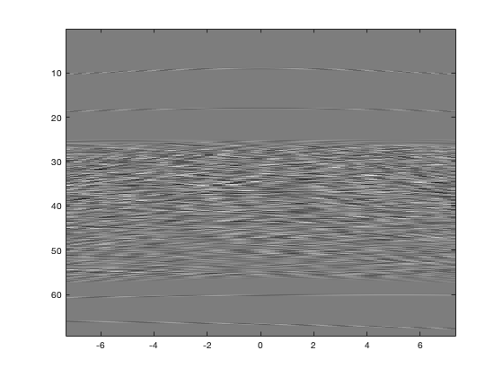
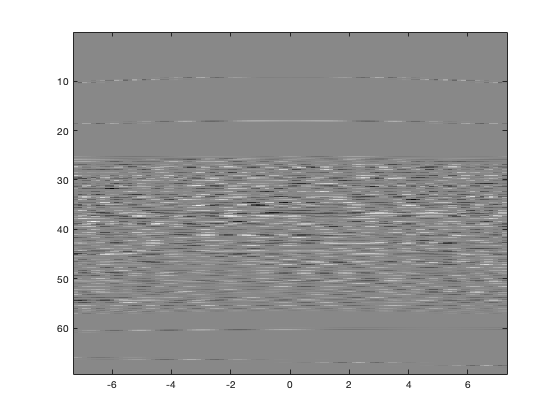
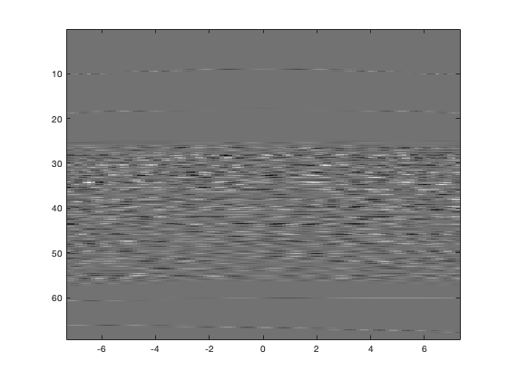
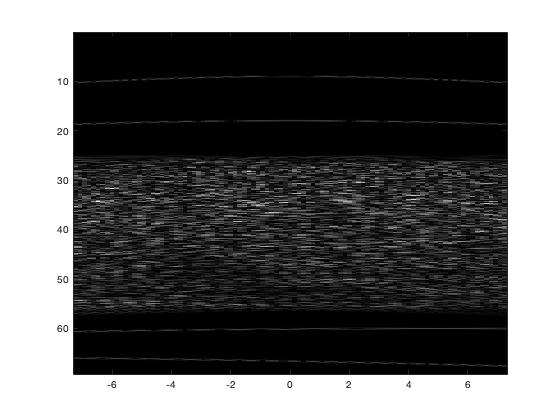
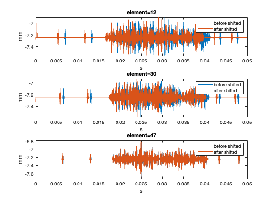
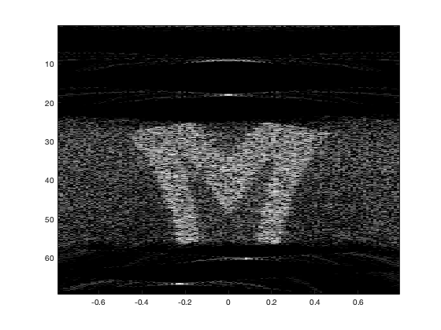
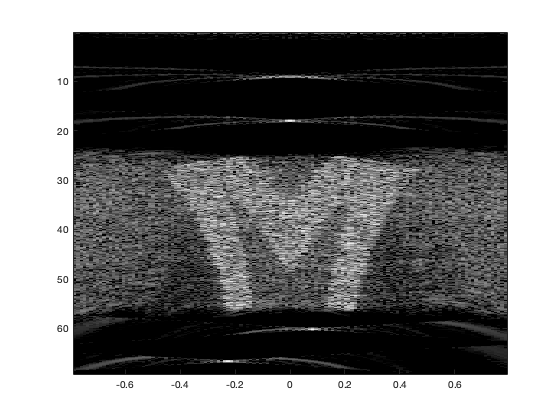
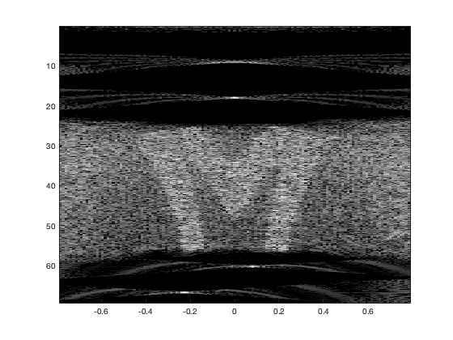
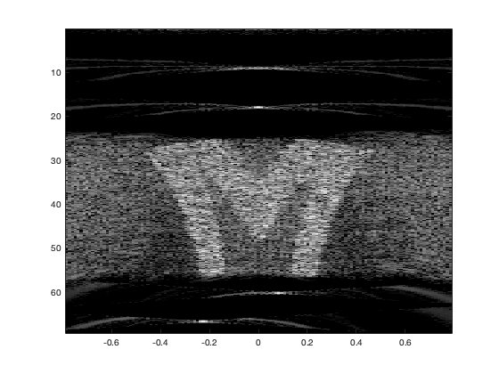

clear all clc
load data23;
f0 = 5;
fs = 20;
c = 1.54;
dx = c/f0/2;
deltat=1/fs;
[ntime, nelem] = size(Data);
disp(sprintf('f0=%g MHz, deltat=%g usec, dx=%g mm', f0, deltat, dx))
disp(sprintf('# of Time Samples=%g, # of Array Elements=%g',ntime,nelem))
x_n=linspace(-(nelem-1)*dx/2,(nelem-1)*dx/2,nelem);
t = linspace(1,ntime,ntime )*deltat;
r = c*t/2;
figure(1)
showimage3(Data, 1,-1,x_n,r)
disp 'hit key', pause
nbeam = round(2*sqrt(2)*(nelem-1)*dx*f0/c);
disp(sprintf('nbeam = %g', nbeam));
sin_theta = sin (linspace(-pi/4,pi/4,nbeam));
databb = zeros(ntime,nelem);
for ie = 1:nelem
for it=1:ntime
databb(it,ie) = fft(Data(it,ie)*exp(2i*pi*f0*t(it)));
if databb(it,ie) < 5
databb(it,ie) = ifft(databb(it,ie));
end
end
end
figure(2)
showimage3(real(databb), 1,-1,x_n,r)
disp(sprintf('real part'))
disp 'hit key', pause
figure(3)
showimage3(imag(databb), 1,-1,x_n,r)
disp(sprintf('imag part'))
disp 'hit key', pause
figure(4)
showimage3(abs(databb), 1,-1,x_n,r)
disp(sprintf('databb'))
disp 'hit key', pause
rsdata = zeros(ntime,nbeam);
rsdata_i = zeros(ntime,nbeam);
rsdata_j = zeros(ntime,nbeam);
rsdata_k = zeros(round(ntime/3),nbeam);
bbshift = zeros(ntime,nelem);
theta_1=linspace(-pi/4,pi/4,nbeam);
x_n=linspace(-(nelem-1)*dx/2,(nelem-1)*dx/2,nelem);
tau=zeros(ntime,nelem,nbeam);
t=linspace(0,ntime/fs,ntime);
mt=zeros(ntime,nelem,nbeam);
phase=zeros(ntime,nelem,nbeam);
for ib=1:nbeam
for ie=1:nelem
for it=1:ntime
tau(it,ie,ib) = -x_n(ie)*sin(theta_1(ib))/c + (x_n(ie)*cos(theta_1(ib)))^2/2/c/r(it);
mt(it,ie,ib)=floor(tau(it,ie,ib)*fs);
phase(it,ie,ib)= -2*pi*f0*tau(it,ie,ib);
if (td <= 1800) && (td > 0)
bbshift(it,ie) = Data(it + mt(it,ie,ib),ie);
rsdata(it,ib) = rsdata(it,ib) + Data(it + mt(it,ie,ib),ie)/nelem;
rsdata_i(it,ib) = rsdata_i(it,ib) + databb(it + mt(it,ie,ib),ie)*exp(1i*phase(it,ie,ib))/nelem;
if mod(ie,2) == 1
rsdata_j(it,ib) = rsdata_j(it,ib) + databb(it + mt(it,ie,ib),ie)*exp(1i*phase(it,ie,ib))/round(nelem/2);
end
if mod(it,3) == 0
rsdata_k(round(it/3),ib) = rsdata_k(round(it/3),ib) + databb(it + mt(it,ie,ib),ie)*exp(1i*phase(it,ie,ib))/nelem;
end
end
end
end
end
figure(5)
subplot(3,1,1)
plot(t/ntime,Data(:,12)*dx-(nelem-1)*dx/2)
xlabel("s")
ylabel("mm")
hold on
plot(t/ntime,bbshift(:,12)*dx-(nelem-1)*dx/2)
legend("before shifted","after shifted")
title("element=12")
xlabel("s")
ylabel("mm")
subplot(3,1,2)
plot(t/ntime,Data(:,30)*dx-(nelem-1)*dx/2)
title("element=30")
xlabel("s")
ylabel("mm")
hold on
plot(t/ntime,bbshift(:,30)*dx-(nelem-1)*dx/2)
legend("before shifted","after shifted")
title("element=30")
xlabel("s")
ylabel("mm")
subplot(3,1,3)
plot(t/ntime,Data(:,47)*dx-(nelem-1)*dx/2)
title("element=47")
xlabel("s")
ylabel("mm")
hold on
plot(t/ntime,bbshift(:,47)*dx-(nelem-1)*dx/2)
legend("before shifted","after shifted")
title("element=47")
xlabel("s")
ylabel("mm")
figure(6)
showimage3(abs(rsdata), 1, 40,theta_1,r)
disp(sprintf('rsdata'))
disp 'hit key', pause
figure(7)
showimage3(abs(rsdata_i), 1, 40,theta_1,r)
disp(sprintf('rsdata_i'))
disp 'hit key', pause
figure(8)
showimage3(abs(rsdata_j), 1, 40,theta_1,r)
disp(sprintf('rsdata_j'))
disp 'hit key', pause
figure(9)
showimage3(abs(rsdata_k), 1, 40,theta_1,3*r)
disp(sprintf('rsdata_k'))
disp 'hit key', pause
f0=5 MHz, deltat=0.05 usec, dx=0.154 mm
# of Time Samples=1800, # of Array Elements=95
hit key
nbeam = 133
real part
hit key
imag part
hit key
databb
hit key
rsdata
hit key
rsdata_i
hit key
rsdata_j
hit key
rsdata_k
        